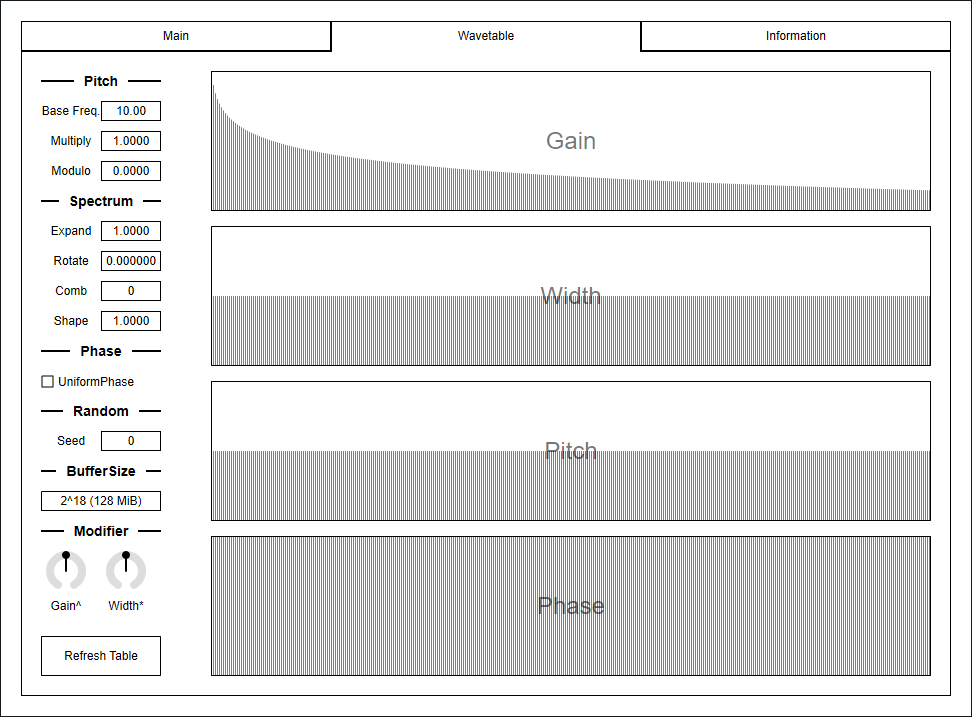

Update: 2020-05-01
LightPadSynth is a lightweight version of CubicPadSynth. For efficiency, interpolation is changed to linear. Also pitch modulation is omitted. Instead, a delay is added for each voice.
LightPadSynth requires CPU which supports AVX or later SIMD instructions.
The package includes following builds:
macOS build isn’t tested because I don’t have Mac. If you found a bug, please file a issue to GitHub repository or send email to ryukau@gmail.com.
Linux build is built on Ubuntu 18.0.4 and tested on Bitwig 3.1.2 and Reaper 6.03. Bitwig 3.1.2 seems to have a bug that occasionally blackouts GUI.
Place *.vst3 directory to:
/Program Files/Common Files/VST3/ for Windows.$HOME/.vst3/ for Linux./Users/$USERNAME/Library/Audio/Plug-ins/VST3/ for macOS.DAW may provides additional VST3 directory. For more information, please refer to the manual of the DAW.
Extract preset zip, then place preset directory to the OS specific path:
/Users/$USERNAME/Documents/VST3 Presets/Uhhyou$HOME/.vst3/presets/Uhhyou/Users/$USERNAME/Library/Audio/Presets/UhhyouPreset directory name must be the same as the plugin. Make Uhhyou directory if it does not exist.
If DAW doesn’t recognize the plugin, try installing C++ redistributable (vc_redist.x64.exe). Installer can be found in the link below.
On Ubuntu 18.0.4, those packages are required.
If DAW doesn’t recognize the plugin, take a look at Package Requirements section of the link below and make sure all the VST3 related package is installed.
REAPER on Linux may not recognize the plugin. A workaround is to delete a file ~/.config/REAPER/reaper-vstplugins64.ini and restart REAPER.
Knob and slider can do:
There is an additional control for number sliders used for Octave, Seed etc.
Control with many blue vertical bars (BarBox) have some keyboard shortcuts. LFO Wave on Main tab and Gain, Width, Pitch, Phase on Wavetable tab are using BarBox. Shortcuts are enabled after left clicking BarBox and mouse cursor is on the inside of BarBox. Cheat sheet is available on Infomation tab.
| Input | Control |
|---|---|
| Ctrl + Left Click | Reset to Default |
| Right Drag | Draw Line |
| d | Reset Everything to Default |
| D | Toggle Min/Mid/Max |
| e | Emphasize Low |
| E | Emphasize High |
| f | Low-pass Filter |
| F | High-pass Filter |
| i | Invert Value (Preserve current minimum) |
| I | Invert Value (Minimum to 0) |
| n | Normalize (Preserve current minimum) |
| N | Normalize (Minimum to 0) |
| p | Permute |
| r | Randomize |
| R | Sparse Randomize |
| s | Sort Descending Order |
| S | Sort Ascending Order |
| t | Subtle Randomize |
| , (Comma) | Rotate Back |
| . (Period) | Rotate Forward |
| 1 | Decrease |
| 2-9 | Decrease 2n-9n |
Pressing Refresh LFO or Refresh Table button stop sound. They also stop all midi notes.
128 wavetables are generated. The number 128 comes from MIDI note number range. The indices of wavetables correspond to MIDI note numbers.
When tuning is not exact, an index will be truncated to semitones. For example, if MIDI note number is 60 and tuning is -20 cents, index becomes floor(60 - 0.20) = 59. Thus, 59th wavetable will be used.
If the image is small, use Ctrl + Mouse Wheel or “View Image” on right click menu to scale.
Diagram only shows overview. It’s not exact implementation.

Gain envelope parameters.
A : Attack time which is the length from note-on to reaching peak value.D : Decay time which is the length from peak value to reaching sustain level.S : Sustain level which is the gain after decay.R : Release time which is the length from note-off to the gain reaching to 0.Master output gain.
Naive 3-pole low-pass filter.
Cutoff frequency of the filter.
Resonance of the filter. Be careful when turning to right, output will be loud.
When set to right-most, cutoff frequency is set to the frequency of a note. When set to left-most, it only use the value of Cutoff.
Filter envelope parameters. Amount changes the amount of modulation to cutoff.
Changes master pitch.
Milli is 1/1000 of semitone or 1/10 cent.
Changes tuning.
ET stands for equal temperature. Note that when ET is less than 12, some notes becomes silent due to frequency becomes too high or too low.
A4 [Hz] is frequency of note A4.
Number of voices used by unison.
To avoid interruption of release, increase the number of nVoice in Misc. section. Note that increasing nVoice consumes more resources.
Detune is the difference of pitch between voices used in a unison.
When Random Detune is checked, amount of detune changes for each note-on.
random = RandomDetune ? rand() : 1
detune = pitch * (1 + random * unisonIndex * Detune)Amount of randomization of gain for voices used in a unison.
Amount of randomization of phase for voices used in a unison.
This parameter makes no effect when Reset in Phase section is checked.
Spread is an amount of stereo spread for a unison.
Spread Type provides options to assign panpot values according to voice pitch.
Alternate L-R: Alternates Ascend L -> R and Ascend R -> L.Alternate M-S: Alternates HighOnMid and HighOnSide.Ascend L -> R: Ascend pitch from left to right.Ascend R -> L: Ascend pitch from right to left.HighOnMid: Ascend pitch from side to mid.HighOnSide: Ascend pitch from mid to side.Random: Randomize pan. May be biased.RotateL: Rotate to left for each note-on.RotateR: Rotate to right for each note-on.Shuffle: Randomly assign pan which is evenly ordered.Initial phase of oscillator.
When checked, resets oscillator phase to the value set by Phase.
When checked, randomize phase for each note-on. In this case, value of Phase becomes range of randomization.
Time length to change some parameter value to current one. Unit is in second.
List of parameters related to Smooth. * represents wild card.
GainSCutoffSAmountKeyFollowMixFeedbackAttackSemiMilliTempoMultiplyAmountLowpassPhaseMaximum polyphony. Lowering the number of this option reduces CPU load.
Random seed. This value change random number sequence.
LightPadSynth has 2 random number generaters. One is used in Main tab and the other is in Wavetable tab.
Mixing ratio of filter output and delay output.
Feedback of a delay. Positive feedback when turning right. Negative feedback when turning left.
Attack time of gate between filter output and delay.
Delay time relative to note frequency. Following equation is used.
delayTime = 1 / (noteFreq * pow(2, (semi + 0.001 * milli) / 12))Sets LFO frequency according to current tempo. Lower numeral represents the length of note. Upper numeral is the number of notes.
Value of Multiply is multiplied to the frequency calculated from Tempo.
// (60 seconds) * (4 beat) = 240
lfoFrequency = Multiply * (BPM / 240) / (TempoUpperNumeral / TempoLowerNumeral)LFO frequency modulation amount.
Changes cutoff freequency of low-pass filter for LFO.
Type of LFO wavetable interpolation.

Refresh LFO wavetable based on current value of LFO Wave.
Note that refreshing wavetable stops sound. It also interrupts MIDI notes.
LFO waveform.

Gain of profile.
Width of profile.
This value is multiplied to profile center frequency.
Range of randomization for the phase of profile.
Fundamental frequency of wavetable. Note that if this value is small, master pitch becomes out of tune.
Changes profile center frequency.
profileCenterFrequency = mod(
BaseFreq * profileIndex * overtonePitch * Multiply,
440 * pow(2, (Modulo - 69) / 12)
)Scaling factor to shrink/expand the spectrum along to frequency axis.

Shift spectrum along to frequency axis.

When this value is higher than 1, it changes the shape of profile like a comb. The value specifies interval between peaks.

Changes profile shapes by using the value of Shape as an exponent.
shapedProfile = powf(profile, shape);When checked, phase of a profile becomes an uniform value.
Random seed. This value change random number sequence.
LightPadSynth has 2 random number generaters. One is used in Main tab and the other is in Wavetable tab.
Size of a wavetable. The power of 2 values can be selected from 2^10 to 2^21.
The value inside parentheses indicates number of bytes in a sum of all wavetables. A number of bytes is calculated with following equation.
bytes = 4 * 128 * BufferSizeExponent for Gain in overtone control.
profileGain = pow(Gain, Gain^)Width in overtone control.profileWidth = Width * (Width*)Refresh PADsynth wavetable based on current configuration of Wavetable tab.
Note that refreshing wavetable stops sound. It also interrupts MIDI notes.
N/A.
LightPadSynth is licensed under GPLv3. Complete licenses are linked below.
If the link above doesn’t work, please send email to ryukau@gmail.com.
VST is a trademark of Steinberg Media Technologies GmbH, registered in Europe and other countries.